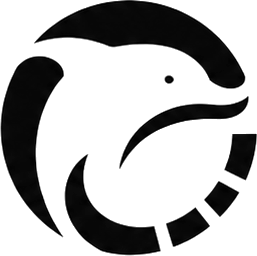
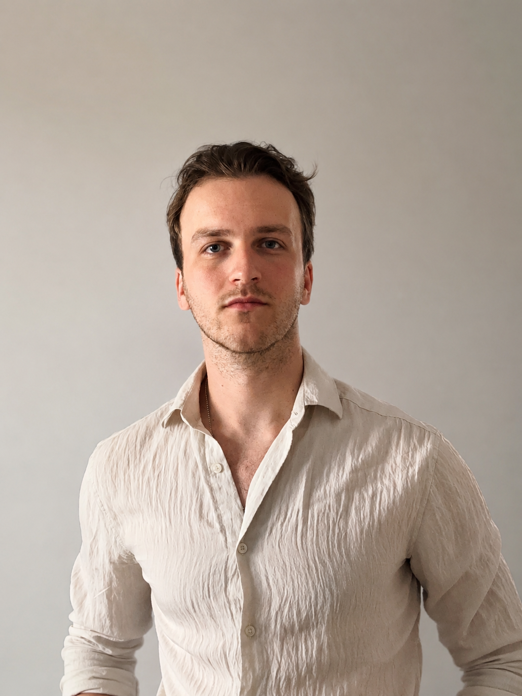
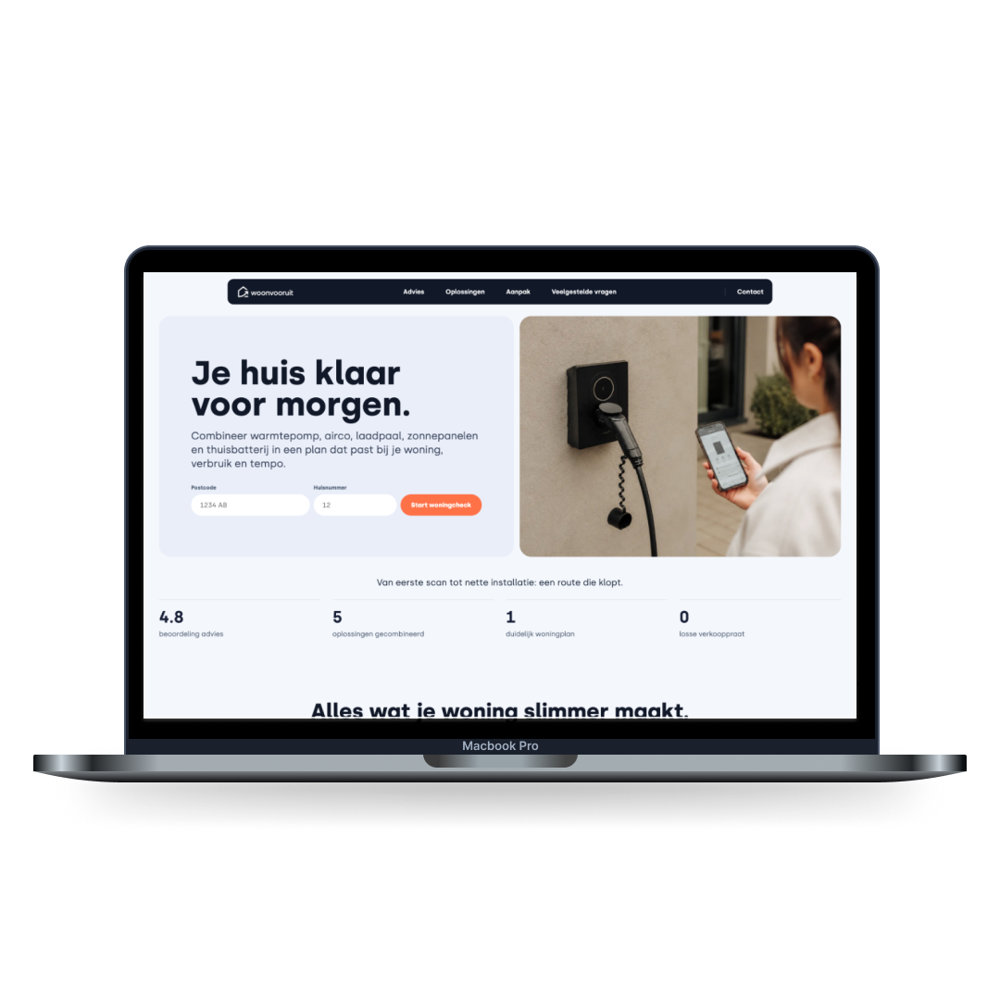
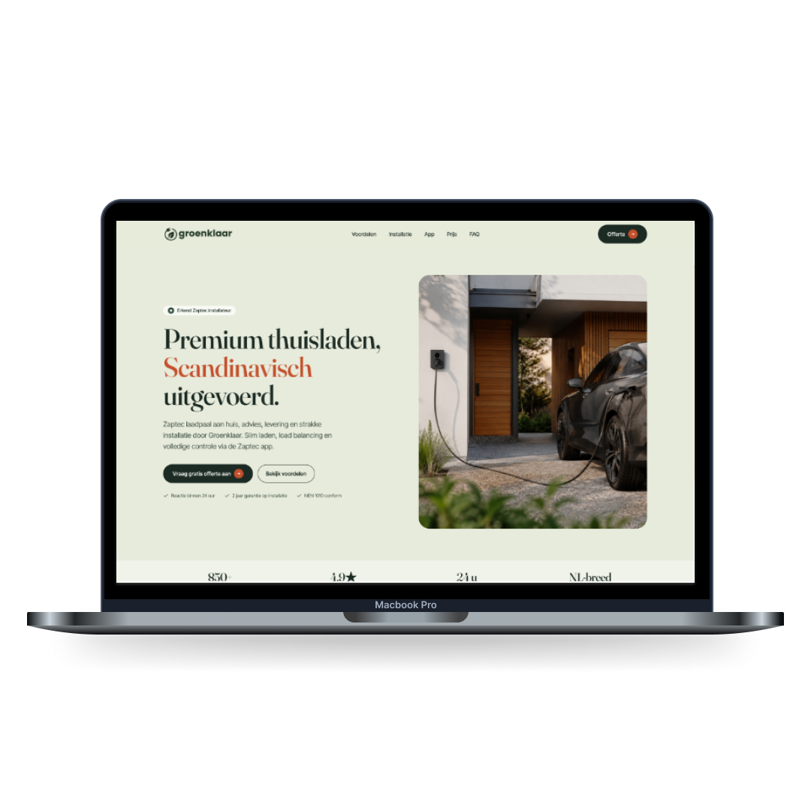
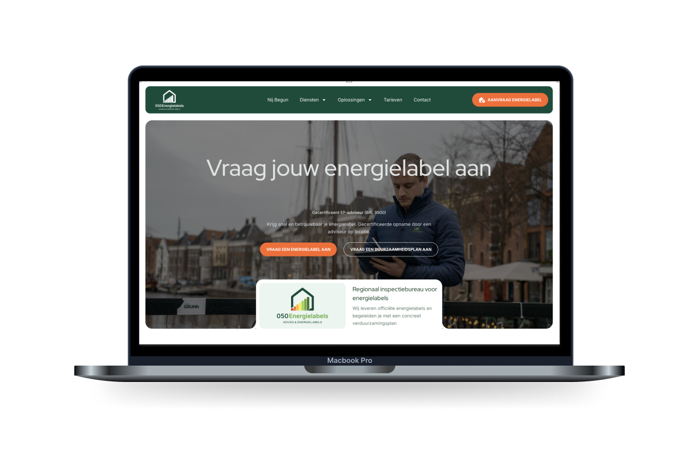

WordPress CMS
Voor als je zelf pagina’s, cases, blogs of landingspagina’s wilt kunnen aanpassen.

ramon digital Plan gesprekWebsites voor Nederlandse ondernemers die gewoon goed online willen staan. Duidelijk, vindbaar en zonder onnodige techniek.

Ramon Kok / websites, SEO en adviesIk help Nederlandse bedrijven met websites die duidelijk maken wat ze doen en waarom iemand contact zou opnemen.
Wil je zelf veel beheren, dan ligt WordPress voor de hand. Is de vraag simpeler, dan kan een AI-website sneller en lichter zijn.
Voor als je zelf pagina’s, cases, blogs of landingspagina’s wilt kunnen aanpassen.
Voor bedrijven die snel online willen met een moderne website zonder ingewikkeld CMS of onnodige techniek.
Voor structuur, vindbaarheid en pagina’s die logisch zijn voor Nederlandse bezoekers.
We beginnen met doel, aanbod, voorbeelden en inhoud. Daarna pas kiezen we de techniek. Zo maken we het niet onnodig complex.
Wat moet de site uitleggen, voor wie is hij bedoeld en wat moet iemand kunnen doen?
WordPress als beheer belangrijk is. AI als het sneller, lichter en goedkoper kan.
Ontwerp, tekst, SEO en oplevering lopen samen door, zodat het geen losse onderdelen worden.
Een paar websites die laten zien hoe verschillend een goede oplossing kan zijn.

Een duidelijke site voor woningadvies, verduurzaming en een snelle eerste check.

Een verzorgde uitstraling voor laadpalen, installatie en aanvragen.

Een praktische aanvraagroute voor energielabels en duurzaamheidsadvies.
Websites, SEO, CRO en online aanwezigheid voor Nederlandse bedrijven.
In de afgelopen jaren heb ik veel gewerkt aan websites, SEO-projecten, online marketing en allerlei vraagstukken rondom websites bij verschillende bedrijven.
Ik heb Communicatie- en Informatiewetenschappen gestudeerd aan Tilburg University, een traineeship gevolgd bij Ecoteers en werk inmiddels fulltime als freelancer. Ik woon en werk waar ik wil, maar help vooral Nederlandse bedrijven met hun website en online aanwezigheid.
Vanuit die ervaring heb ik mijn eigen visie op webdesign ontwikkeld. Ik doe vooral waar ik goed in ben: mijn kennis van websites, CRO en SEO vertalen naar websites die passen bij het doel van een bedrijf.
Ik vind het leuk om websites te bouwen, maar ik ben niet afhankelijk van dit bedrijf. Daardoor kan ik kritisch kijken naar een vraagstuk. Als ik ergens weinig ervaring mee heb, als iets niet mijn expertise is of als ik denk dat een bepaalde oplossing niet gaat werken, dan zal ik dat aangeven.
Mijn inkomen is niet afhankelijk van Ramon Digital. Daardoor hoef ik niet iedere opdracht aan te nemen. Als ik denk dat ik niet de juiste persoon ben voor een project, of als ik denk dat een andere oplossing beter past, dan bespreek ik dat liever vooraf.
Plan een halfuurtje. Dan kijken we samen naar je website, ideeën of plannen. Liever direct mailen? Stuur je vraag naar info@ramondigital.nl.